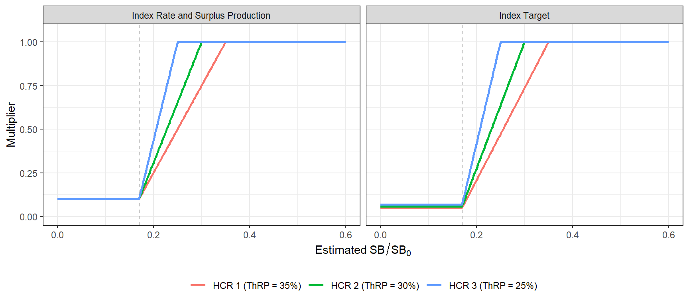

| HCR | ThRP | Index Rate and Surplus Production | Index Target |
|---|---|---|---|
| HCR 1 | 35% | 0.1 | 0.049 |
| HCR 2 | 30% | 0.1 | 0.057 |
| HCR 3 | 25% | 0.1 | 0.068 |
5 Candidate Management Procedures
The MSE currently includes three types of candidate management procedures (CMPs):
- Index Rate (IR): an index-based CMP that sets the TAC as a catch/index rate multiplied by the current index;
- Index Target (IT): an index-based CMP that sets the TAC as a reference catch, reduced when the index falls below the threshold;
- Surplus Production (SP): a model-based CMP that fits a surplus production model and sets the TAC from the estimated stock status and \(F_{\text{MSY}}\).
Each CMP type uses one of 3 harvest control rules (HCRs; Section 5.1), selected for that type together with its other settings (Section 5.7).
The variants of each type differ in the limit on the change in the TAC between management cycles (10%, 20%, 40%), for a total of 9 CMPs, which show the trade-off between TAC stability and catch.
Each CMP is named by its type, HCR, and TAC change limit; e.g., IR_H2_20 is the Index Rate CMP with HCR 2 and a 20% limit on the change in the TAC.
All CMPs set a single TAC for the total catch (removals, in t) of all fleets. The CMPs use data aggregated to calendar years: annual catches (summed over the quarters) and annual indices (averaged over the quarters with data).
5.1 Harvest Control Rules
The candidate HCRs (Table 5.1) were specified in terms of stock status, \(SB_{\text{current}}/SB_0\), where \(SB_0\) is the equilibrium unfished spawning biomass, and fishing mortality. Below the limit reference point (LRP), fishing mortality is reduced to a minimum level, \(F_{\text{min}}\); between the LRP and the threshold reference point (ThRP), it increases linearly to the target, \(F_{\text{TARGET}}\); and above the ThRP it is constant at the target. \(F_{X\%}\) is the fishing mortality that reduces the spawning potential ratio to \(X\%\).
| HCR | \(F_{\text{TARGET}}\) | Control Point 1 (ThRP) | Control Point 2 (LRP) | \(F_{\text{min}}\) |
|---|---|---|---|---|
| 1 | \(F_{40\%}\) | 35% \(SB_0\) | 17% \(SB_0\) | \(F_{90\%}\) |
| 2 | \(F_{40\%}\) | 30% \(SB_0\) | 17% \(SB_0\) | \(F_{90\%}\) |
| 3 | \(F_{40\%}\) | 25% \(SB_0\) | 17% \(SB_0\) | \(F_{90\%}\) |
| 4 | \(F_{35\%}\) | 30% \(SB_0\) | 17% \(SB_0\) | \(F_{90\%}\) |
| 5 | \(F_{35\%}\) | 25% \(SB_0\) | 17% \(SB_0\) | \(F_{90\%}\) |
| 6 | \(F_{30\%}\) | 25% \(SB_0\) | 17% \(SB_0\) | \(F_{90\%}\) |
The CMPs use the shape of these HCRs, but they do not set fishing mortality directly:
- Stock status is estimated, not known. The CMPs do not observe spawning biomass, \(SB_0\), or fishing mortality. Stock status is estimated from the indices of abundance (Index Rate and Index Target) or from a surplus production model (Surplus Production; Section 5.2), and the control points are applied to this estimate.
- The HCR sets a multiplier, not an F. The output of the HCR is a multiplier on a quantity specific to each CMP type, from which the TAC is calculated: the catch/index rate (Index Rate), a reference catch (Index Target), or a multiple of the \(F_{\text{MSY}}\) estimated by the surplus production model (Surplus Production). Only the Surplus Production CMPs estimate reference points, and these estimates are uncertain (Section 5.5).
- The level of fishing is set by tuning. The fishing intensity above the ThRP is set by the tuning parameter (Section 5.7). The selected HCR for each CMP type is the one that gives the highest catch when tuned (step 1 in Section 5.7).
- \(F_{\text{min}}\) is a relative reduction. At and below the LRP, the fishing intensity is reduced to \(F_{90\%}/F_{40\%}\) = 0.1 of its level above the ThRP, the ratio of \(F_{\text{min}}\) to \(F_{\text{TARGET}}\) from the per-recruit analysis of the base case OM in the terminal year of the assessment.
The fishing mortality that results in the OM therefore depends on how well the TAC matches the true state of the stock, and can differ from the fishing intensity intended by the HCR.
The HCR multiplier for each CMP type is (Figure 5.1):
- Index Rate and Surplus Production: the fishing intensity (the catch/index rate, or \(F\) relative to the estimated \(F_{\text{MSY}}\)) is multiplied by 0.1 at and below the LRP, increases linearly to 1 at the ThRP, and is 1 above the ThRP.
- Index Target: the catch is constant above the ThRP, and decreases linearly to 0.1 \(\times\) LRP/ThRP of that catch at the LRP (Table 5.2).
The minimum multiplier is lower for the Index Target CMPs because their multiplier applies to a catch rather than to a fishing intensity. Above the ThRP, the Index Target CMPs keep the catch constant rather than the fishing intensity, so the fishing intensity decreases as the stock increases.

5.2 Estimated Stock Status
The index-based CMPs estimate stock status from the two Japanese longline indices (S2 and S4; Section 2.1). Each index is expressed relative to its level at \(SB_0\), \(I_{0,j}\), calculated from the mean index over 2017–2021 and the mean \(SB/SB_0\) over the same years in the Base Case OM (0.345):
\[ I_{0,j} = \frac{\bar{I}_{j}}{\overline{SB/SB_0}} \]
giving \(I_0\) = 1.47 and 0.846 for S2 and S4 respectively.
The current status of each index, \(S_j\), is the index averaged over the most recent years, after optional loess smoothing (the number of years and the smoothing are CMP settings; Section 5.7).
The estimated stock status is the mean of the two indices’ status relative to their \(I_0\):
\[ x = \frac{1}{2}\sum_{j=1}^{2} \frac{S_j}{I_{0,j}} \]
The Surplus Production CMPs estimate stock status as the estimated biomass relative to carrying capacity (\(B/K\)) at the start of the year the TAC applies. The control points are specified in units of \(B/B_{\text{MSY}}\) by dividing the LRP and ThRP by \(B_{\text{MSY}}/K\), which depends on the shape of the production function (Section 5.5).
5.3 Index Rate
The Index Rate CMPs set the TAC as a catch/index rate multiplied by the current index. Each index is calibrated into its own catch/index rate, \(\hat{r}_j\): the mean total catch over the last 2 historical years divided by the mean of index \(j\) over the same years. The trial TAC is:
\[ \text{TrialTAC} = \frac{1}{2}\sum_{j=1}^{2} S_j \times m \times \hat{r}_j \times \theta(x) \]
where \(m\) is the tuning parameter and \(\theta(x)\) is the HCR multiplier (Figure 5.1):
\[ \theta(x) = \begin{cases} \phi & x \le \text{LRP} \\[4pt] \phi + (1 - \phi)\dfrac{x - \text{LRP}}{\text{ThRP} - \text{LRP}} & \text{LRP} < x < \text{ThRP} \\[4pt] 1 & x \ge \text{ThRP} \end{cases} \]
with \(\phi = F_{\text{min}}/F_{\text{TARGET}}\) = 0.1. Because the catch/index rate is calibrated to the recent catch, \(m\) = 1 corresponds to the recent catch/index ratio.
The Index Rate CMPs use HCR 1 (ThRP = 35% \(SB_0\)), with current status calculated from the index averaged over the most recent year after loess smoothing (Section 5.7).
5.4 Index Target
The Index Target CMPs set the TAC as a reference catch, the mean total catch over the last 5 historical years (\(\bar{C}\)), scaled by the tuning parameter and the HCR:
\[ \text{TrialTAC} = m \times \bar{C} \times \theta_C(x) \]
where \(\theta_C(x)\) has the same shape as \(\theta(x)\), with \(\phi\) = 0.1 \(\times\) LRP/ThRP (Figure 5.1). The TAC is therefore constant above the ThRP, so the catch does not increase when the stock is above the ThRP.
The Index Target CMPs use HCR 1 (ThRP = 35% \(SB_0\)), with current status calculated from the index averaged over the most recent year after loess smoothing (Section 5.7).
5.5 Surplus Production
The Surplus Production CMPs fit a Schaefer surplus production model (Pella and Tomlinson 1969) to the annual catch and the four Japanese longline indices (S1–S4), each with its own catchability. \(F_{\text{MSY}}\) and MSY are estimated, and the stock is assumed to be unfished at the start of the catch series (1975).
In each management cycle, the model is fitted to the available data and projected to the start of the year the TAC applies, assuming the catch in the intervening years is the TAC in force. The fishing mortality is:
\[ F = m \times \hat{F}_{\text{MSY}} \times \theta\!\left(\hat{B}/\hat{K}\right) \]
where \(m\) is the tuning parameter and \(\theta\) is the HCR multiplier (Figure 5.1). The TAC is the mean annual catch when the model is projected at \(F\) over the 3-year management cycle. If the model fit fails or does not converge, the previous TAC is kept.
The Surplus Production CMPs use HCR 1 (ThRP = 35% \(SB_0\)) (Section 5.7).
WarningModel convergence
In the projections, the surplus production model failed to converge in 46–60% of the management cycles, depending on the OM, so the previous TAC was kept in these cycles. In 10–20% of the simulations, the model did not converge in any management cycle, so the TAC remained at its initial level throughout the projection period.
The results for the Surplus Production CMPs are therefore largely determined by how the TAC is set when the model fails, rather than by the model estimates, and should not be considered further without additional analysis of the model fits.
5.6 TAC Change Limits
For all CMPs, the proportional change from the previous TAC is limited to 10%, 20%, 40%, both up and down, and changes smaller than 1% leave the TAC unchanged:
\[ \text{TAC} = \text{TAC}_{\text{prev}} \times \min\left(\max\left(\frac{\text{TrialTAC}}{\text{TAC}_{\text{prev}}},\ 1 - \delta\right),\ 1 + \delta\right) \]
where \(\delta\) is the TAC change limit and \(\text{TAC}_{\text{prev}}\) is the TAC in force.
5.7 Tuning Methodology
Each CMP has a single tuning parameter, \(m\), that scales the target fishing intensity: the catch/index rate (Index Rate), the reference catch (Index Target), or \(F\) relative to \(\hat{F}_{\text{MSY}}\) (Surplus Production).
The CMPs are tuned for the Base Case OM to maximise the mean annual catch over 2028–2057, subject to the Safety and Status objectives (Chapter 4):
- Safety: the probability that spawning biomass remains above the LRP in every year is at least 0.8;
- Status: the probability that \(F \leq F_{40\%}\) is at least 0.5.
The tuning is done in two steps.
5.7.1 Step 1: CMP Settings
The HCR and the other settings of each CMP type were selected from a set of candidate values (Table 5.3):
- Each configuration was projected at 5 values of \(m\) over 0.25–4, using the first 50 simulations, and the catch at the largest value of \(m\) that meets both constraints was interpolated.
- The 2 configurations with the highest catch were then fully tuned (Step 2) on all simulations, and the configuration with the highest catch was selected.
The selected HCR and settings were then used for all CMPs of that type.
The settings include the HCR (Table 5.1), the number of recent years the index is averaged over to calculate current status, whether the index is smoothed (loess) before calculating its status, and the shape parameter of the surplus production model. The calibration period of the Index Rate and Index Target CMPs was not included, because it only scales the catch/index rate or the reference catch, which is also scaled by \(m\).
| Setting | Candidate values | Selected |
|---|---|---|
| Index Rate | ||
| HCR | 1, 2, 3 | 1 |
| Years averaged for current status | 1, 3 | 1 |
| Index smoothing | yes, no | yes |
| Index Target | ||
| HCR | 1, 2, 3 | 1 |
| Years averaged for current status | 1, 3 | 1 |
| Index smoothing | yes, no | yes |
| Surplus Production | ||
| HCR | 1, 2, 3 | 1 |
| Production function shape (n) | 0.5, 1, 2 | 2 |
5.7.2 Step 2: Tuning Parameter
\(m\) was then tuned for each of the 9 CMPs. It was first evaluated on a grid of 7 log-spaced values over 0.25–4, which was extended if necessary, and then refined towards the largest value that meets both constraints (or the value with the highest catch, if that is lower), until the range of \(m\) is within 1% or the binding constraint is within 0.5% of its minimum.
For each CMP type, the smallest TAC change limit (10%) gives the most stable TAC, and is always retained. A larger limit is retained only if it increases the mean catch by at least 2% compared with the next smaller retained limit, so the retained CMPs show the trade-off between TAC stability and catch. The 20% variants are also retained, to show the effect of a looser limit (Table 5.4).
| CMP | ThRP | TAC change | m | Mean catch (t) | Safety | Status |
|---|---|---|---|---|---|---|
| Retained | ||||||
| IR_H1_10 | 0.35 | 0.1 | 2.16 | 13,631 | 0.85 | 0.50 |
| IR_H1_20 | 0.35 | 0.2 | 2.02 | 13,356 | 0.80 | 0.52 |
| IT_H1_10 | 0.35 | 0.1 | 1.84 | 13,563 | 0.89 | 0.50 |
| IT_H1_20 | 0.35 | 0.2 | 1.79 | 13,421 | 0.89 | 0.50 |
| SP_H1_10 | 0.35 | 0.1 | 1.87 | 12,905 | 0.80 | 0.74 |
| SP_H1_20 | 0.35 | 0.2 | 0.91 | 12,852 | 0.80 | 0.74 |
| Not Retained | ||||||
| IR_H1_40 | 0.35 | 0.4 | 1.94 | 12,869 | 0.80 | 0.57 |
| IT_H1_40 | 0.35 | 0.4 | 1.83 | 13,333 | 0.87 | 0.50 |
| SP_H1_40 | 0.35 | 0.4 | 0.46 | 11,430 | 0.80 | 0.87 |